Melodic could install on Ubuntu 18.04
Noetic should be installed on Ubuntu 20.04
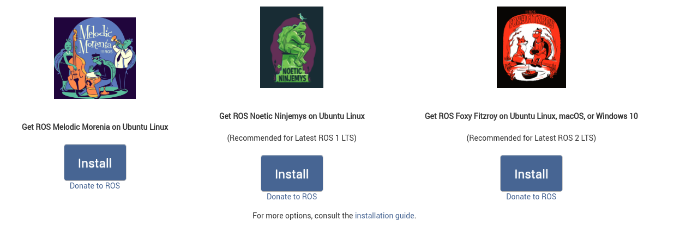
Configure your Ubuntu repositories to allow "restricted," "universe," and "multiverse." You can follow the Ubuntu guide for instructions on doing this.
Setup your computer to accept software from packages.ros.org.
sudo sh -c 'echo "deb http://packages.ros.org/ros/ubuntu $(lsb_release -sc) main" > /etc/apt/sources.list.d/ros-latest.list'
xxxxxxxxxxsudo apt install curl # if you haven't already installed curlxxxxxxxxxxcurl -s https://raw.githubusercontent.com/ros/rosdistro/master/ros.asc | sudo apt-key add -
First, make sure your Debian package index is up-to-date:
xxxxxxxxxxsudo apt updateDesktop-Full Install: (Recommended)
xxxxxxxxxxsudo apt install ros-melodic-desktop-full
It's convenient if the ROS environment variables are automatically added to your bash session every time a new shell is launched
xxxxxxxxxxecho "source /opt/ros/melodic/setup.bash" >> ~/.bashrcxxxxxxxxxxsource ~/.bashrc
Up to now you have installed what you need to run the core ROS packages. To create and manage your own ROS workspaces, there are various tools and requirements that are distributed separately. For example, rosinstall is a frequently used command-line tool that enables you to easily download many source trees for ROS packages with one command.
xxxxxxxxxxsudo apt install python-rosdep python-rosinstall python-rosinstall-generator python-wstool build-essential
Before you can use many ROS tools, you will need to initialize rosdep. rosdep enables you to easily install system dependencies for source you want to compile and is required to run some core components in ROS. If you have not yet installed rosdep, do so as follows.
xxxxxxxxxxsudo apt install python-rosdepWith the following, you can initialize rosdep.
xxxxxxxxxxsudo rosdep initxxxxxxxxxxrosdep updaterun ROS master
xxxxxxxxxxroscorerun a turtle simulation
xxxxxxxxxxrosrun turtlesim turtlesim_nodexxxxxxxxxxrosrun turtlesim turtle_teleop_key
xxxxxxxxxxupdate-alternatives --list pythonxxxxxxxxxxsudo update-alternatives --install /usr/bin/python python /usr/bin/python2.7 0xxxxxxxxxxsudo update-alternatives --install /usr/bin/python python /usr/bin/python3.6 1xxxxxxxxxxsudo update-alternatives --install /usr/bin/python python /usr/bin/python3.7 2xxxxxxxxxxpython --versionxxxxxxxxxxupdate-alternatives --list pythonxxxxxxxxxxsudo update-alternatives --config pythonxxxxxxxxxxsudo update-alternatives --remove python /usr/bin/python2.7
maybe useful on how to use python 3.0 in the ROS
https://dhanoopbhaskar.com/blog/2020-05-07-working-with-python-3-in-ros-kinetic-or-melodic/
change the version of python based on the user
xxxxxxxxxxalias python='/usr/bin/python3.6'xxxxxxxxxx. ~/.bashrcxxxxxxxxxxpython --version
xxxxxxxxxxsudo apt-get autoremove --purge ros-*
节点（Node）--执行单元
节点管理器（ROS master）-- 控制中心
话题(Topic) -- 异步通信机制
消息（Message）-- 话题数据
服务 （Service） -- 同步通信机制
topic 和 service 的区别
| topic | service | |
|---|---|---|
| 同步性 | 异步 | 同步 |
| 通信模型 | 发布/订阅 | 服务器/客户端 |
| 底层协议 | ROSTCP/ROSUDP | ROSTCP/ROSUDP |
| 反馈机制 | 无 | 有 |
| 缓冲区 | 有 | 无 |
| 实时性 | 弱 | 强 |
| 节点关系 | 多对多 | 一对多（一个server） |
| 适用场景 | 数据传输 | 逻辑处理 |
参数（Parameter） --全局共享字典
功能包（Package）
功能包清单（Package manifest）
元功能包（Meta Packages）
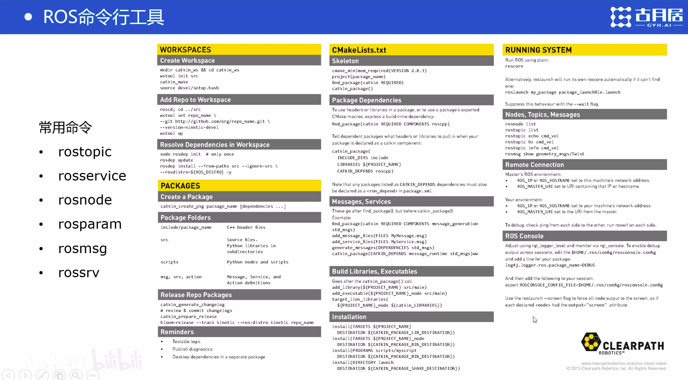
rostopic
rosservice
rosnode
rosparam
rosmsg
rossrv
首先运行
xxxxxxxxxxroscore
打开仿真器界面
xxxxxxxxxxrosrun turtlesim turtlesim_node
使用键盘控制海龟
xxxxxxxxxxrosrun turtlesim turtle_teleop_key
以rqt 开头的工具，都是基于qt的可视化工具
这个是一个显示系统计算图的工具，可以了解系统的全貌
会产生一个界面
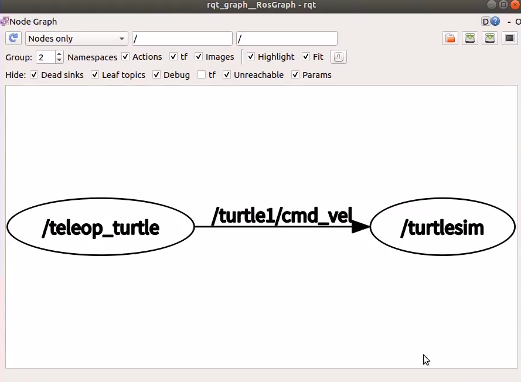
列出了当前ros系统中的结点， telop_turtle 键盘控制器结点 和 turtlesim 仿真器结点
显示系统当中所有结点相关的命令
xxxxxxxxxxrosnode
把所有系统中的结点都列出来的指令
xxxxxxxxxxrosnode list
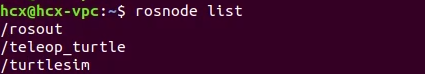
rosout 是默认的话题，采集日志信息，提交给上面显示，暂时不需要关心
查看某个结点具体的信息
xxxxxxxxxxrosnode info
如，查看turtlesim 这个结点的信息，可以看见正在发布的话题，publications, 正在订阅的话题 cmd_vel， 提供的服务，可以进行的配置
xxxxxxxxxxrosnode info /turtlesim
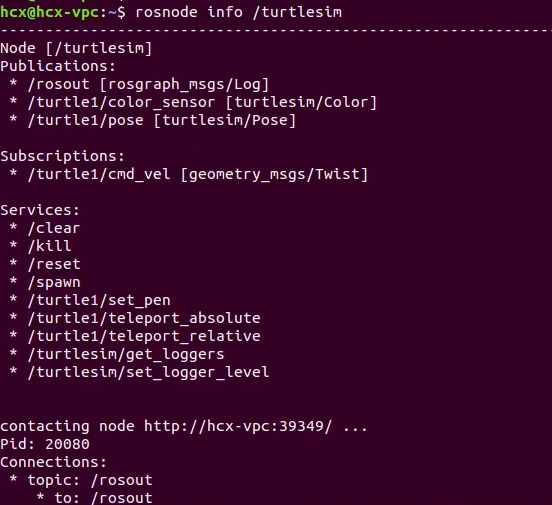
和话题相关的命令行参数
打印出当前系统的所有话题列表
xxxxxxxxxxrostopic list
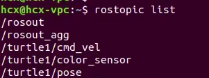
这里的 /turtle1/cmd_vel 就是sudo 指令的话题名
键盘控制结点和海龟仿真器结点通过这个话题，进行通讯，完成运动
可以通过指令，给话题发布数据，使海龟运动
rostopic pub 话题名 数据内容/消息结构 具体数据 （用tab键会自动补全）
xxxxxxxxxxrostopic pub /turtle1/cmd_vel geometry_msgs/Twist "linear:x: 0.0y: 0.0z: 0.0angular:x: 0.0y: 0.0z: 0.0"
linear 是线速度，angular为角速度
角度为rad/s 线速度为 m/s
可以加 -r 参数，进行循环。 rate ，以 多少的频率发布内容，10Hz, 代表一秒钟10次
xxxxxxxxxxrostopic pub -r 10 /turtle1/cmd_vel geometry_msgs/Twist "linear:x: 0.0y: 0.0z: 0.0angular:x: 0.0y: 0.0z: 0.0"
ctrl+c 停止指令
z: 垂直仿真器向外
和消息相关
可以查看消息的数据结构
xxxxxxxxxxrosmsg show geometry_msgs/Twist
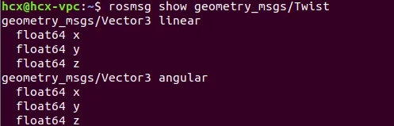
速度指令的速度结构，包含了线速度和角速度 xyz 三个方向的分量
服务相关指令
查看所有service 内容。当前仿真器中，提供的所有service 服务的内容，这里的服务端都是仿真器，终端都是作为客户端去请求某个服务
xxxxxxxxxxrosservice list
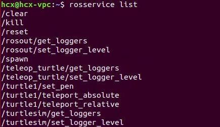
spawn 可以产生一个新的海龟
调用，发布请求，用call，加服务，加服务类型
xxxxxxxxxxrosservice call /spawn "x: 0.0y: 0.0theta: 0.0name: ''"
会返回一个反馈信息，name
可以使用rostopic list查看
xxxxxxxxxxrostopic list
可以看到多了一个海龟, 此时也可以控制新的海龟了
话题记录，记录系统所有话题数据，进行保存，在下次使用进行复现
保存当前系统数据
xxxxxxxxxxrosbag record -a -O cmd_record
-a 保存所有
-O 把数据保存为一个压缩包
控制海龟运动，然后进行复现
复现
xxxxxxxxxxrosplay play cmd_record.bag
Workspace 是一个存放工程开发相关文件的文件夹
xxxxxxxxxxmkdir -p ~/catkin_ws/srccd ~/catkin_ws/srccatkin_init_workspacexxxxxxxxxxcd ~/catkin_ws/catkin_make install
需要创建功能包，再创建代码，是放置ROS源码的最小单元，所有源码必须都放到功能包里边
xxxxxxxxxxcatkin_create_pkg <package_name> [depend1][depend2][depend3]
xxxxxxxxxxcd ~/catkin_ws/srccatkin_create_pkg test_pkg std_msgs rospy roscpp
xxxxxxxxxxcd ~/catkin_wscatkin_makesource ~/catkin_ws/devel/setup.bash
同一个工作空间下，不允许存在同名功能包
不同工作空间下，允许存在同名功能包
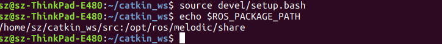
xxxxxxxxxxsource devel/setup.bash
xxxxxxxxxxecho $ROS_PACKAGE_PATH
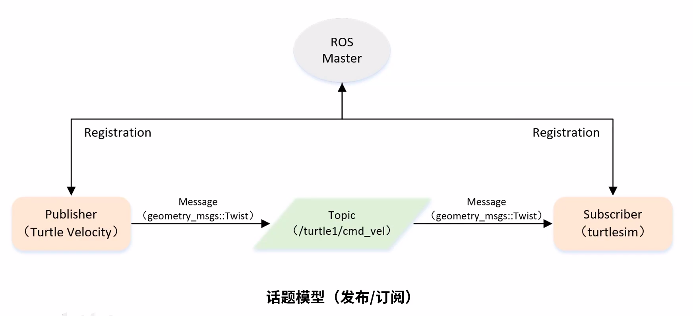
xxxxxxxxxxcd ~/catkin_ws/srccatkin_create_pkg learning_topic roscpp rospy std_msgs geometry_msgs turtlesim
在 ~/catkin_ws/src/learning_topic/src 下，添加 velocity_publisher.cpp 文件
x/** * 该例程将发布 turtle1/cmd_vel 话题，消息类型geometry_msgs::Twist * */int main(){ //ROS 节点初始化 ros::init(argc, argv, "velocity_publisher"); //创建节点句柄 ros::NodeHandle n; //创建一个publisher, 发布名为/turtle1/cmd_vel 的 topic, 消息类型为 geometry_msgs::Twist, 队列长度10 ros::Publisher turtle_vel_pub = n.advertise<geometry_msgs::Twist>("/turtle1/cmd_vel", 10); // 设置循环的频率 ros::Rate loop_rate(10); int count = 0; while (ros::ok()) { //初始化geometry_msgs::Twist 类型的消息 geometry_msgs::Twist vel_msg; vel_msg.linear.x = 0.5; vel_msg.angular.z = 0.2; //发布消息 turtle_vel_pub.publish(vel_msg); ROS_INFO("Publish turtle velocity command[%0.2f m/s, %0.2f rad/s]",vel_msg.linear.x, vel_msg.angular.z); loop_rate.sleep(); } return 0;}
实现一个发布者
python 版本 velocity_publisher.py
xxxxxxxxxx#!/usr/bin/env python# -*- coding utf-8 -*-# 该例程将发布turtle1/cmd_vel话题，消息类型geometry_msgs::Twistimport rospyfrom geometry_msgs.msg import Twistdef velocity_publisher(): # ROS 节点初始化 rospy.init_code('velocity_publisher', anonymous=True) # 创建一个Publisher, 发布名为 /turtle1/cmd_vel 的topic，消息类型为 geometry_msgs::Twist 队列长度为10 # 设置循环的频率 rate = rospy.Rate(10) while not rospy.is_shutdown(): # 初始化geometry_msgs::Twist 类型的消息 vel_msg = Twist() vel_msg.linear.x = 0.5 vel_msg.angular.z = 0.2 # 发布消息 turtle_vel_pub.publish(vel_msg) rospy.loginfo("Publish turtle velocity command[%0.2f m/s, %0.2f rad/s]", vel_msg.linear.x, vel_msg.angular.z) # 按照循环频率延时 rate.sleep()if __name__ == '__main__': try: velocity_publisher() except rospy.ROSInterruptException: pass
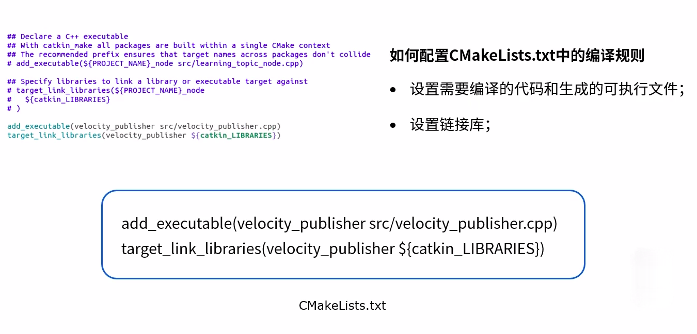
xxxxxxxxxxadd_executable(velocity_publisher src/velocity_publisher.cpp)target_link_libraries(velocity_publisher ${catkin_LIBRARIES})
xxxxxxxxxxcd ~/catkin_wscatkin_makesource devel/setup.bashroscorerosrun turtlesim turtlesim_noderosrun learning_topic velocity_publisher
注：
因为每次修改都要设置一下setup.bash，可以将其添加到环境变量中，即在 .bashrc 中加入以下内容
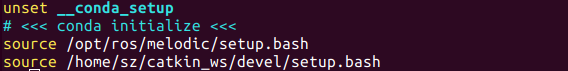
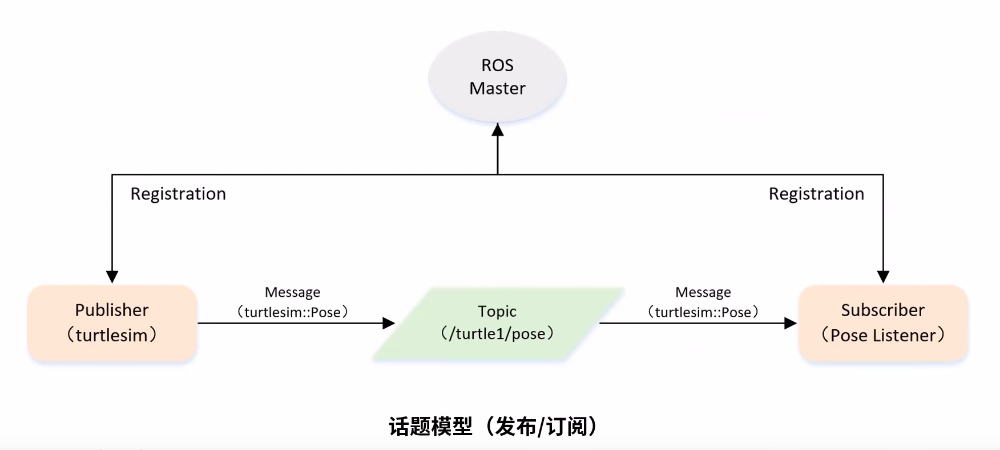
添加pose_subscriber.cpp
xxxxxxxxxx/** * 该例程将订阅/turtle1/pose话题，消息类型turtlesim::Pose */ // 接收到订阅的消息后，会进入消息回调函数void poseCallback(const turtlesim::Pose::ConstPtr& msg){ // 将接收到的消息打印出来 ROS_INFO("Turtle pose: x:%0.6f, y:%0.6f", msg->x, msg->y);}int main(int argc, char **argv){ // 初始化ROS节点 ros::init(argc, argv, "pose_subscriber"); // 创建节点句柄 ros::NodeHandle n; // 创建一个Subscriber，订阅名为/turtle1/pose的topic，注册回调函数poseCallback ros::Subscriber pose_sub = n.subscribe("/turtle1/pose", 10, poseCallback); // 循环等待回调函数 ros::spin(); return 0;}
实现一个订阅者：
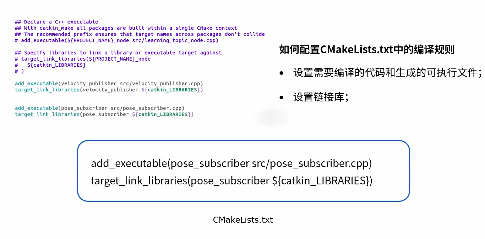
xxxxxxxxxxadd_executable(pose_subscriber src/pose_subscriber.cpp)target_link_libraries(pose_subscriber ${catkin_LIBRARIES})
python 版本 pose_subscriber.py
xxxxxxxxxx# 该例程将订阅/turtle1/pose话题，消息类型turtlesim::Poseimport rospyfrom turtlesim.msg import Posedef poseCallback(msg): rospy.loginfo("Turtle pose: x:%0.6f, y:%0.6f", msg.x, msg.y)def pose_subscriber(): # ROS节点初始化 rospy.init_node('pose_subscriber', anonymous=True) # 创建一个Subscriber，订阅名为/turtle1/pose的topic，注册回调函数poseCallback rospy.Subscriber("/turtle1/pose", Pose, poseCallback) # 循环等待回调函数 rospy.spin()if __name__ == '__main__': pose_subscriber()
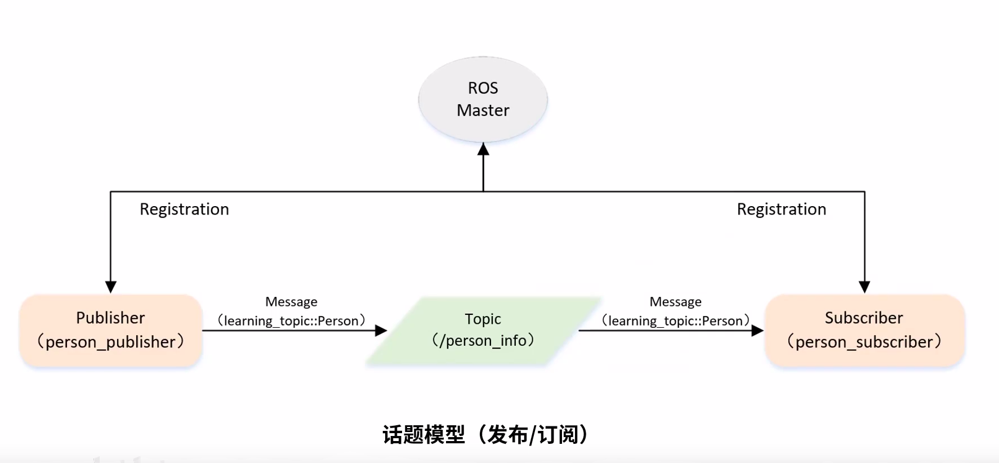
定义Person.msg文件
xxxxxxxxxxstring nameuint8 sexuint8 ageuint8 unknown=0uint8 male = 1uint8 female = 2在package.xml中添加功能包依赖
xxxxxxxxxx<build_depend>message_generation</build_depend><exec_depend>message_runtime</exec_depend>
在CMakeList.txt 添加编译选项
xxxxxxxxxxfind_package(...... message_generation)add_message_files(FILES Person.msg)generate_messages(DEPENDENCIES std_msgs)catkin_package(...... message_runtime)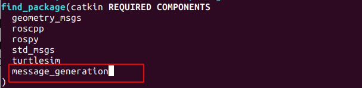
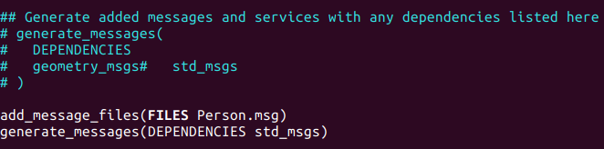
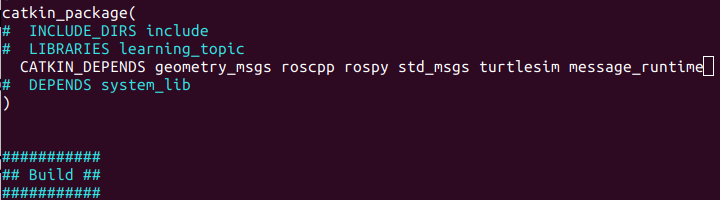
编译生成语言相关文件
person_publisher.cpp
xxxxxxxxxx/** * 该例程将发布/person_info话题，自定义消息类型learning_topic::Person */ int main(int argc, char **argv){ // ROS节点初始化 ros::init(argc, argv, "person_publisher"); // 创建节点句柄 ros::NodeHandle n; // 创建一个Publisher，发布名为/person_info的topic，消息类型为learning_topic::Person，队列长度10 ros::Publisher person_info_pub = n.advertise<learning_topic::Person>("/person_info", 10); // 设置循环的频率 ros::Rate loop_rate(1); int count = 0; while (ros::ok()) { // 初始化learning_topic::Person类型的消息 learning_topic::Person person_msg; person_msg.name = "Tom"; person_msg.age = 18; person_msg.sex = learning_topic::Person::male; // 发布消息 person_info_pub.publish(person_msg); ROS_INFO("Publish Person Info: name:%s age:%d sex:%d", person_msg.name.c_str(), person_msg.age, person_msg.sex); // 按照循环频率延时 loop_rate.sleep(); } return 0;}
实现一个发布者
person_subscriber.cpp
xxxxxxxxxx/** * 该例程将订阅/person_info话题，自定义消息类型learning_topic::Person */ // 接收到订阅的消息后，会进入消息回调函数void personInfoCallback(const learning_topic::Person::ConstPtr& msg){ // 将接收到的消息打印出来 ROS_INFO("Subcribe Person Info: name:%s age:%d sex:%d", msg->name.c_str(), msg->age, msg->sex);}int main(int argc, char **argv){ // 初始化ROS节点 ros::init(argc, argv, "person_subscriber"); // 创建节点句柄 ros::NodeHandle n; // 创建一个Subscriber，订阅名为/person_info的topic，注册回调函数personInfoCallback ros::Subscriber person_info_sub = n.subscribe("/person_info", 10, personInfoCallback); // 循环等待回调函数 ros::spin(); return 0;}
实现一个订阅者：
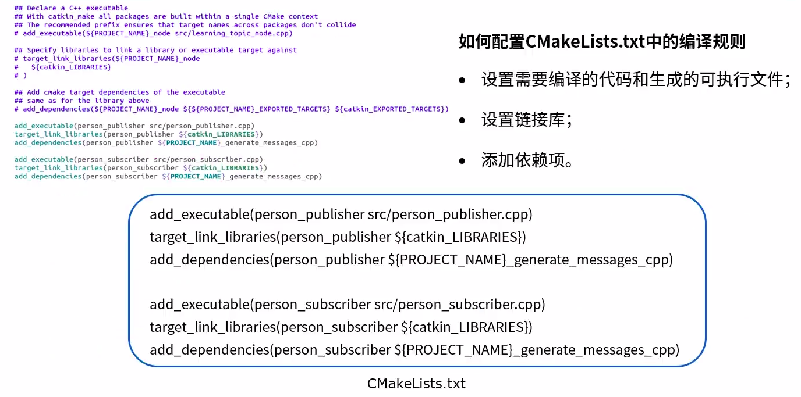
xxxxxxxxxxadd_executable(person_publisher src/person_publisher.cpp)target_link_libraries(person_publisher ${catkin_LIBRARIES})add_dependencies(person_publisher ${PROJECT_NAME}_generate_messages_cpp)add_executable(person_subscriber src/person_subscriber.cpp)target_link_libraries(person_subscriber ${catkin_LIBRARIES})add_dependencies(person_subscriber ${PROJECT_NAME}_generate_messages_cpp)
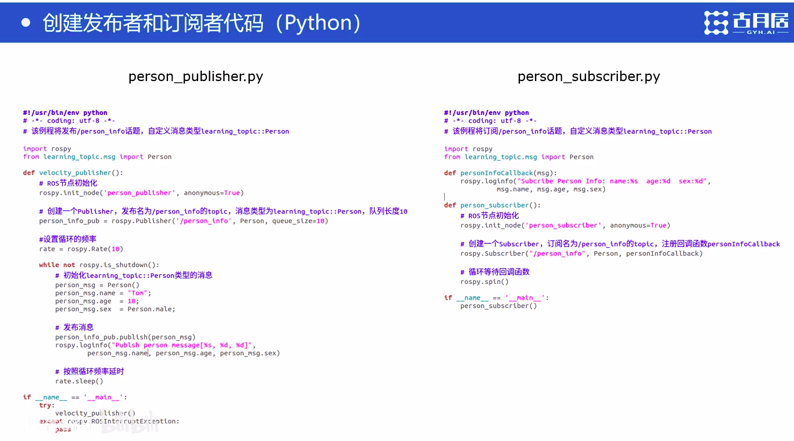
xxxxxxxxxxroscorerosrun learning_topic person_subscriberrosrun learning_topic person_publisher
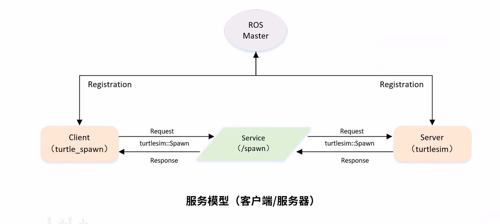
通过程序的方式，发送服务请求
xxxxxxxxxxcd ~/catkin_ws/srccatkin_create_pkg learning_service roscpp rospy std_msgs geometry_msgs turtlesim
创建turtle_spawn.cpp文件
xxxxxxxxxx/** * 该例程将请求/spawn服务，服务数据类型turtlesim::Spawn */int main(int argc, char** argv){ // 初始化ROS节点 ros::init(argc, argv, "turtle_spawn"); // 创建节点句柄 ros::NodeHandle node; // 发现/spawn服务后，创建一个服务客户端，连接名为/spawn的service ros::service::waitForService("/spawn"); ros::ServiceClient add_turtle = node.serviceClient<turtlesim::Spawn>("/spawn"); // 初始化turtlesim::Spawn的请求数据 turtlesim::Spawn srv; srv.request.x = 2.0; srv.request.y = 2.0; srv.request.name = "turtle2"; // 请求服务调用 ROS_INFO("Call service to spwan turtle[x:%0.6f, y:%0.6f, name:%s]", srv.request.x, srv.request.y, srv.request.name.c_str()); add_turtle.call(srv); // 显示服务调用结果 ROS_INFO("Spwan turtle successfully [name:%s]", srv.response.name.c_str()); return 0;};
如何实现一个客户端:
python 版本 turtle_spawn.py
xxxxxxxxxx# 该例程将请求/spawn服务，服务数据类型turtlesim::Spawnimport sysimport rospyfrom turtlesim.srv import Spawndef turtle_spawn(): # ROS节点初始化 rospy.init_node('turtle_spawn') # 发现/spawn服务后，创建一个服务客户端，连接名为/spawn的service rospy.wait_for_service('/spawn') try: add_turtle = rospy.ServiceProxy('/spawn', Spawn) # 请求服务调用，输入请求数据 response = add_turtle(2.0, 2.0, 0.0, "turtle2") return response.name except rospy.ServiceException, e: print "Service call failed: %s"%eif __name__ == "__main__": #服务调用并显示调用结果 print "Spwan turtle successfully [name:%s]" %(turtle_spawn())如何实现一个客户端
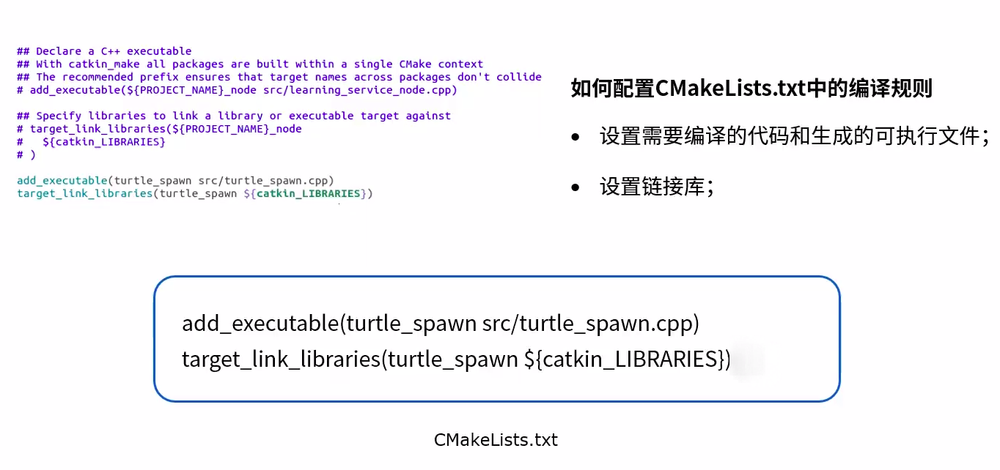
xxxxxxxxxxadd_executable(turtle_spawn src/turtle_spawn.cpp)target_link_libraries(turtle_spawn ${catkin_LIBRARIES})
xxxxxxxxxxcd ~/catkin_wscatkin_makesource devel/setup.bashroscorerosrun turtlesim turtlesim_noderosrun learning_service turtle_spawn
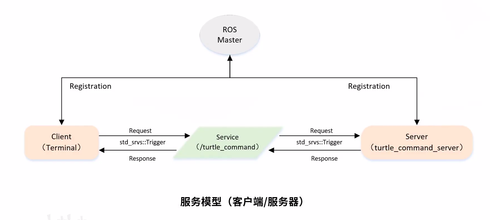
实现server端的功能
给海龟发送速度指令，topic, request
Trigger: 触发
创建文件 turtle_command_server.cpp
xxxxxxxxxx/** * 该例程将执行/turtle_command服务，服务数据类型std_srvs/Trigger */ ros::Publisher turtle_vel_pub;bool pubCommand = false;// service回调函数，输入参数req，输出参数resbool commandCallback(std_srvs::Trigger::Request &req, std_srvs::Trigger::Response &res){ pubCommand = !pubCommand; // 显示请求数据 ROS_INFO("Publish turtle velocity command [%s]", pubCommand==true?"Yes":"No"); // 设置反馈数据 res.success = true; res.message = "Change turtle command state!"; return true;}int main(int argc, char **argv){ // ROS节点初始化 ros::init(argc, argv, "turtle_command_server"); // 创建节点句柄 ros::NodeHandle n; // 创建一个名为/turtle_command的server，注册回调函数commandCallback ros::ServiceServer command_service = n.advertiseService("/turtle_command", commandCallback); // 创建一个Publisher，发布名为/turtle1/cmd_vel的topic，消息类型为geometry_msgs::Twist，队列长度10 turtle_vel_pub = n.advertise<geometry_msgs::Twist>("/turtle1/cmd_vel", 10); // 循环等待回调函数 ROS_INFO("Ready to receive turtle command."); // 设置循环的频率 ros::Rate loop_rate(10); while(ros::ok()) { // 查看一次回调函数队列 ros::spinOnce(); // 如果标志为true，则发布速度指令 if(pubCommand) { geometry_msgs::Twist vel_msg; vel_msg.linear.x = 0.5; vel_msg.angular.z = 0.2; turtle_vel_pub.publish(vel_msg); } //按照循环频率延时 loop_rate.sleep(); } return 0;}
如何实现一个服务器
创建turtle_command_server.py 文件
xxxxxxxxxx# 该例程将执行/turtle_command服务，服务数据类型std_srvs/Triggerimport rospyimport thread,timefrom geometry_msgs.msg import Twistfrom std_srvs.srv import Trigger, TriggerResponsepubCommand = False;turtle_vel_pub = rospy.Publisher('/turtle1/cmd_vel', Twist, queue_size=10)def command_thread(): while True: if pubCommand: vel_msg = Twist() vel_msg.linear.x = 0.5 vel_msg.angular.z = 0.2 turtle_vel_pub.publish(vel_msg) time.sleep(0.1)def commandCallback(req): global pubCommand pubCommand = bool(1-pubCommand) # 显示请求数据 rospy.loginfo("Publish turtle velocity command![%d]", pubCommand) # 反馈数据 return TriggerResponse(1, "Change turtle command state!")def turtle_command_server(): # ROS节点初始化 rospy.init_node('turtle_command_server') # 创建一个名为/turtle_command的server，注册回调函数commandCallback s = rospy.Service('/turtle_command', Trigger, commandCallback) # 循环等待回调函数 print "Ready to receive turtle command." thread.start_new_thread(command_thread, ()) rospy.spin()if __name__ == "__main__": turtle_command_server()
如何实现一个服务器
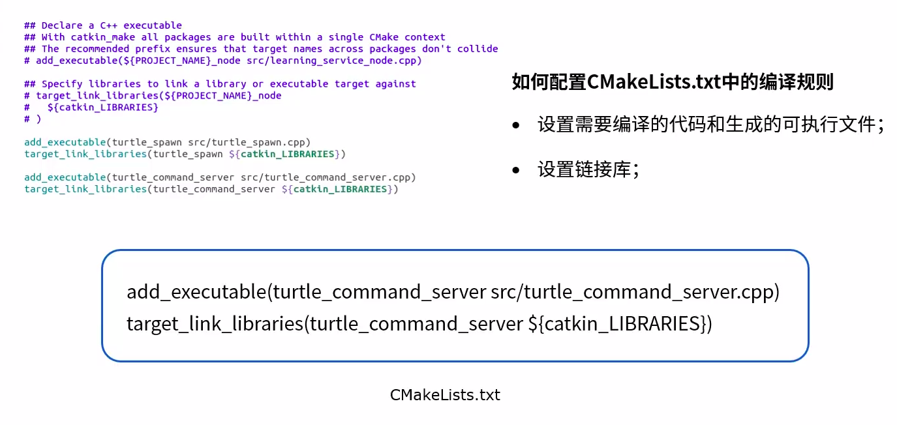
xxxxxxxxxxadd_executable(turtle_command_server src/turtle_command_server.cpp)target_link_libraries(turtle_command_server ${catkin_LIBRARIES})
xxxxxxxxxxcd ~/catkin_wscatkin_makesource devel/setup.bashroscorerosrun turtlesim turtlesim_noderosrun learning_service turtle_command_serverrosservice call /turtle_command "{}"
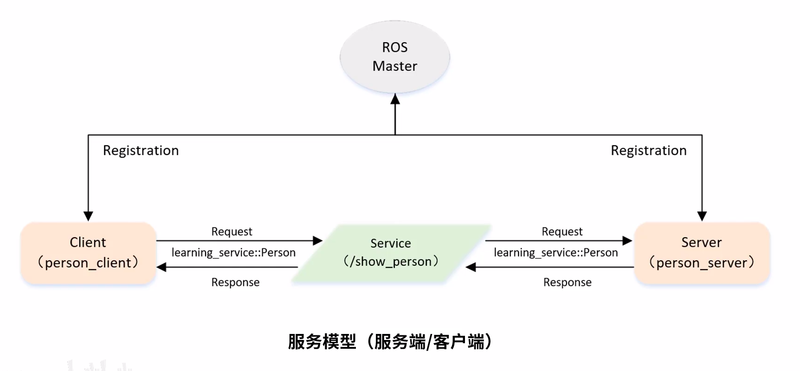
xxxxxxxxxxstring nameuint8 ageuint8 sexuint8 unknown=0uint8 male = 1uint8 female = 2---string result
xxxxxxxxxx<build_depend>message_generation</build_depend><exec_depend>message_runtime</exec_depend>
xxxxxxxxxxfind_package(...... message_generation)add_service_files(FILES Person.srv)generate_messages(DEPENDENCIES std_msgs)catkin_package(...... message_runtime)
xxxxxxxxxxcd ~/catkin_wscatkin_make
创建 person_server.cpp 文件
x
/** * 该例程将执行/show_person服务，服务数据类型learning_service::Person */ // service回调函数，输入参数req，输出参数resbool personCallback(learning_service::Person::Request &req, learning_service::Person::Response &res){ // 显示请求数据 ROS_INFO("Person: name:%s age:%d sex:%d", req.name.c_str(), req.age, req.sex); // 设置反馈数据 res.result = "OK"; return true;}int main(int argc, char **argv){ // ROS节点初始化 ros::init(argc, argv, "person_server"); // 创建节点句柄 ros::NodeHandle n; // 创建一个名为/show_person的server，注册回调函数personCallback ros::ServiceServer person_service = n.advertiseService("/show_person", personCallback); // 循环等待回调函数 ROS_INFO("Ready to show person informtion."); ros::spin(); return 0;}
如何实现一个服务器
创建 person_client.cpp 文件
x
/** * 该例程将请求/show_person服务，服务数据类型learning_service::Person */int main(int argc, char** argv){ // 初始化ROS节点 ros::init(argc, argv, "person_client"); // 创建节点句柄 ros::NodeHandle node; // 发现/spawn服务后，创建一个服务客户端，连接名为/spawn的service ros::service::waitForService("/show_person"); ros::ServiceClient person_client = node.serviceClient<learning_service::Person>("/show_person"); // 初始化learning_service::Person的请求数据 learning_service::Person srv; srv.request.name = "Tom"; srv.request.age = 20; srv.request.sex = learning_service::Person::Request::male; // 请求服务调用 ROS_INFO("Call service to show person[name:%s, age:%d, sex:%d]", srv.request.name.c_str(), srv.request.age, srv.request.sex); person_client.call(srv); // 显示服务调用结果 ROS_INFO("Show person result : %s", srv.response.result.c_str()); return 0;};
如何实现一个客户端
客户端person_client.py
xxxxxxxxxx# 该例程将请求/show_person服务，服务数据类型learning_service::Personimport sysimport rospyfrom learning_service.srv import Person, PersonRequestdef person_client(): # ROS节点初始化 rospy.init_node('person_client') # 发现/spawn服务后，创建一个服务客户端，连接名为/spawn的service rospy.wait_for_service('/show_person') try: person_client = rospy.ServiceProxy('/show_person', Person) # 请求服务调用，输入请求数据 response = person_client("Tom", 20, PersonRequest.male) return response.result except rospy.ServiceException, e: print "Service call failed: %s"%eif __name__ == "__main__": #服务调用并显示调用结果 print "Show person result : %s" %(person_client())
服务端person_server.py
xxxxxxxxxx# 该例程将执行/show_person服务，服务数据类型learning_service::Personimport rospyfrom learning_service.srv import Person, PersonResponsedef personCallback(req): # 显示请求数据 rospy.loginfo("Person: name:%s age:%d sex:%d", req.name, req.age, req.sex) # 反馈数据 return PersonResponse("OK")def person_server(): # ROS节点初始化 rospy.init_node('person_server') # 创建一个名为/show_person的server，注册回调函数personCallback s = rospy.Service('/show_person', Person, personCallback) # 循环等待回调函数 print "Ready to show person informtion." rospy.spin()if __name__ == "__main__": person_server()
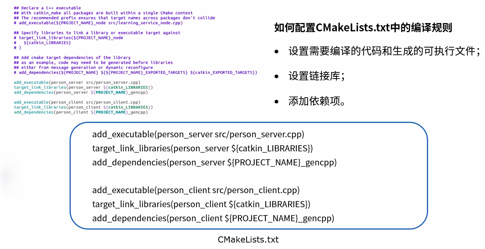
xxxxxxxxxxadd_executable(person_server src/person_server.cpp)target_link_libraries(person_server ${catkin_LIBRARIES})add_dependencies(person_server ${PROJECT_NAME}_gencpp)add_executable(person_client src/person_client.cpp)target_link_libraries(person_client ${catkin_LIBRARIES})add_dependencies(person_client ${PROJECT_NAME}_gencpp)
xxxxxxxxxxcd ~/catkin_wscatkin_makesource devel/setup.bashroscorerosrun learning_service person_serverrosrun learning_service person_client
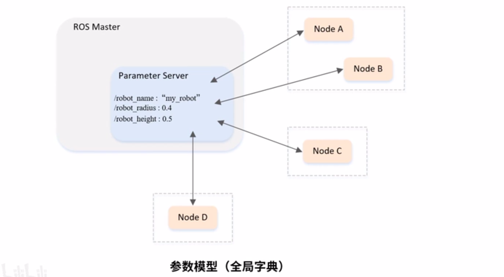
https://wiki.ros.org/Parameter%20Server
xxxxxxxxxxcd ~/catkin_ws/srccatkin_create_pkg learning_parameter roscpp rospy std_srvs
YAML参数文件
xxxxxxxxxxbackground_b255background_g86background_r69rosdistro'melodic'roslaunch urishost_sz_thinkpad_e480__38735'http://sz-ThinkPad-E480:38735/'rosversion'1.14.11'run_id8d5b5f2e-dd14-11eb-970d-70c94ed84975
rosparam
xxxxxxxxxxrosparam list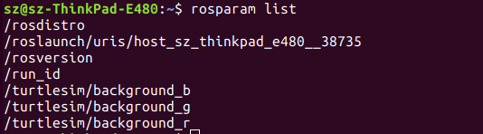
xxxxxxxxxxrosparam get param_key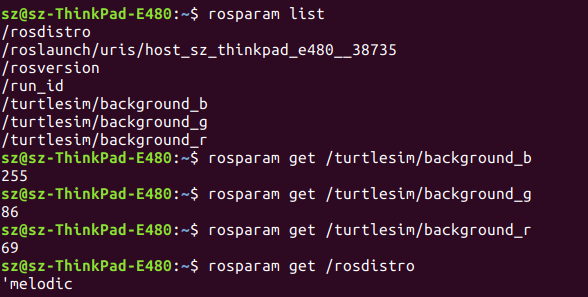
xxxxxxxxxxrosparam set param_key param_value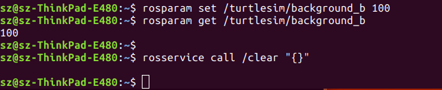
xxxxxxxxxxrosparam dump file_name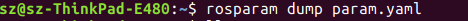
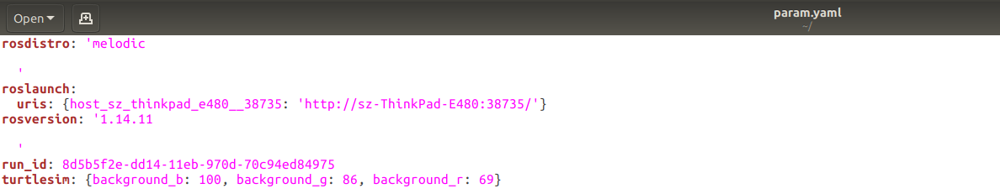
xxxxxxxxxxrosparam load file_name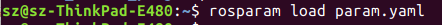
xxxxxxxxxxrosservice call /clear "{}"
xxxxxxxxxxrosparam delete param_key
创建文件 parameter_config.cpp
xxxxxxxxxx/** * 该例程设置/读取海龟例程中的参数 */int main(int argc, char **argv){ int red, green, blue; // ROS节点初始化 ros::init(argc, argv, "parameter_config"); // 创建节点句柄 ros::NodeHandle node; // 读取背景颜色参数 ros::param::get("/turtlesim/background_r", red); ros::param::get("/turtlesim/background_g", green); ros::param::get("/turtlesim/background_b", blue); ROS_INFO("Get Backgroud Color[%d, %d, %d]", red, green, blue); // 设置背景颜色参数 ros::param::set("/turtlesim/background_r", 255); ros::param::set("/turtlesim/background_g", 255); ros::param::set("/turtlesim/background_b", 255); ROS_INFO("Set Backgroud Color[255, 255, 255]"); // 读取背景颜色参数 ros::param::get("/turtlesim/background_r", red); ros::param::get("/turtlesim/background_g", green); ros::param::get("/turtlesim/background_b", blue); ROS_INFO("Re-get Backgroud Color[%d, %d, %d]", red, green, blue); // 调用服务，刷新背景颜色 ros::service::waitForService("/clear"); ros::ServiceClient clear_background = node.serviceClient<std_srvs::Empty>("/clear"); std_srvs::Empty srv; clear_background.call(srv); sleep(1); return 0;}
如何获取/设置参数
创建parameter_config.py
xxxxxxxxxx# 该例程设置/读取海龟例程中的参数import sysimport rospyfrom std_srvs.srv import Emptydef parameter_config(): # ROS节点初始化 rospy.init_node('parameter_config', anonymous=True) # 读取背景颜色参数 red = rospy.get_param('/turtlesim/background_r') green = rospy.get_param('/turtlesim/background_g') blue = rospy.get_param('/turtlesim/background_b') rospy.loginfo("Get Backgroud Color[%d, %d, %d]", red, green, blue) # 设置背景颜色参数 rospy.set_param("/turtlesim/background_r", 255); rospy.set_param("/turtlesim/background_g", 255); rospy.set_param("/turtlesim/background_b", 255); rospy.loginfo("Set Backgroud Color[255, 255, 255]"); # 读取背景颜色参数 red = rospy.get_param('/turtlesim/background_r') green = rospy.get_param('/turtlesim/background_g') blue = rospy.get_param('/turtlesim/background_b') rospy.loginfo("Get Backgroud Color[%d, %d, %d]", red, green, blue) # 发现/spawn服务后，创建一个服务客户端，连接名为/spawn的service rospy.wait_for_service('/clear') try: clear_background = rospy.ServiceProxy('/clear', Empty) # 请求服务调用，输入请求数据 response = clear_background() return response except rospy.ServiceException, e: print "Service call failed: %s"%eif __name__ == "__main__": parameter_config()
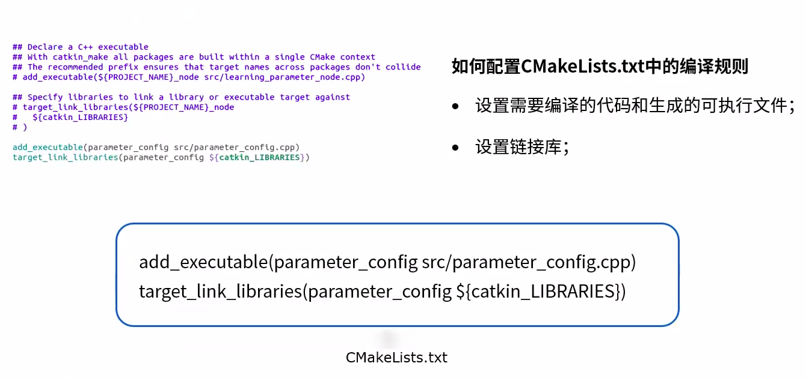
xxxxxxxxxxadd_executable(parameter_config src/parameter_config.cpp)target_link_libraries(parameter_config ${catkin_LIBRARIES})
xxxxxxxxxxcd ~/catkin_wscatkin_makesource devel/setup.bashroscorerosrun turtlesim turtlesim_noderosrun learning_parameter parameter_config
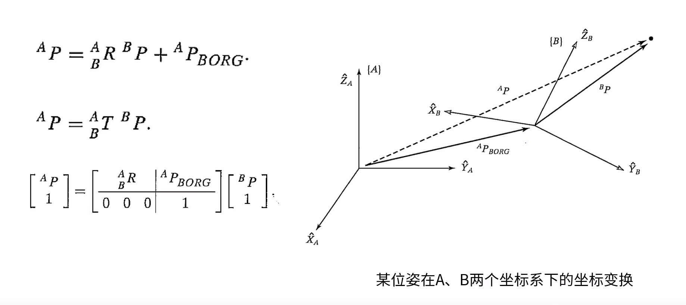
参考《机器人学导论》
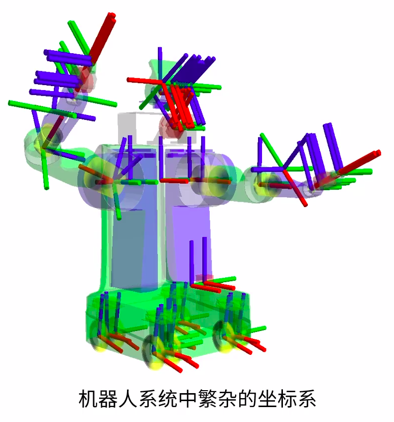
TF 功能包能干什么
TF坐标变换如何实现
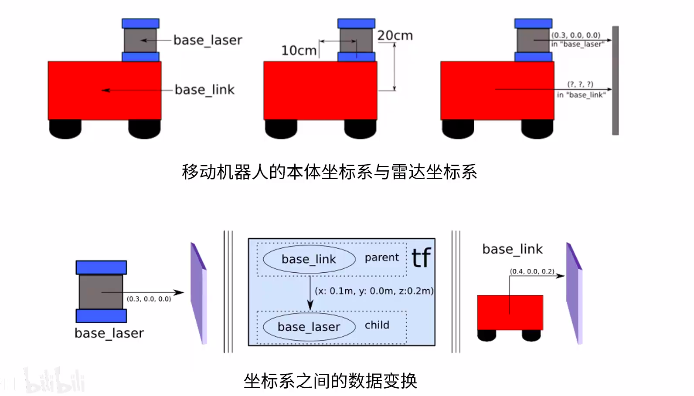
xxxxxxxxxxsudo apt-get install ros-melodic-turtle-tfroslaunch turtle_tf turtle_tf_demo.launchrosrun turtlesim turtle_teleop_keyrosrun tf view_frames
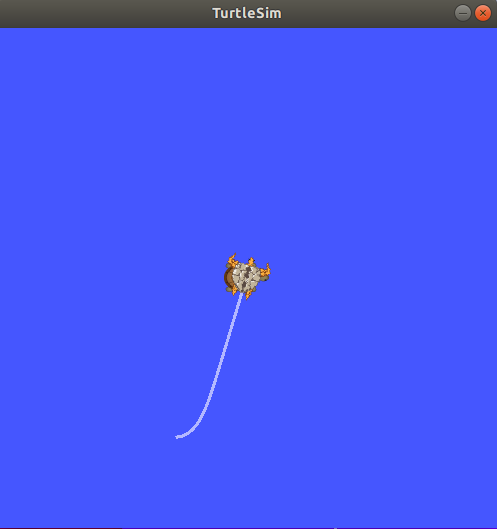
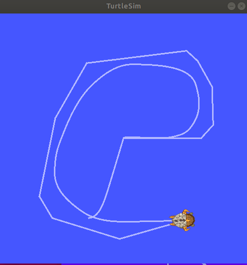
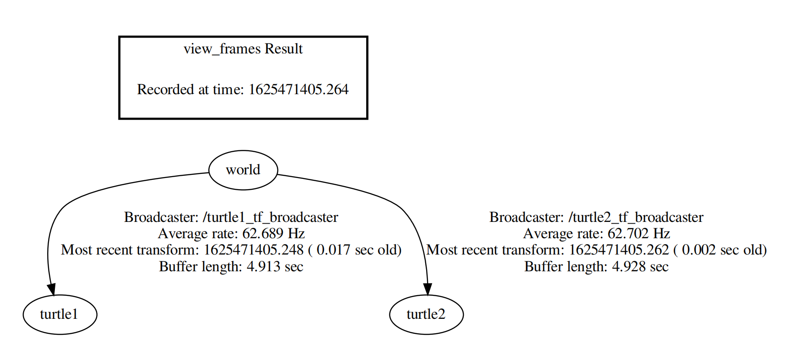
命令行工具
xxxxxxxxxxrosrun tf tf_echo turtle1 turtle2
可视化工具
xxxxxxxxxxrosrun rviz rviz -d 'rospack find turtle_tf' /rviz/turtle_rviz.rviz
xxxxxxxxxxcd ~/catkin_ws/srccatkin_create_pkg learning_tf roscpp rospy tf turtlesim
创建turtle_tf_broadcaster.cpp文件
xxxxxxxxxx/** * 该例程产生tf数据，并计算、发布turtle2的速度指令 */std::string turtle_name;void poseCallback(const turtlesim::PoseConstPtr& msg){ // 创建tf的广播器 static tf::TransformBroadcaster br; // 初始化tf数据 tf::Transform transform; transform.setOrigin( tf::Vector3(msg->x, msg->y, 0.0) ); tf::Quaternion q; q.setRPY(0, 0, msg->theta); transform.setRotation(q); // 广播world与海龟坐标系之间的tf数据 br.sendTransform(tf::StampedTransform(transform, ros::Time::now(), "world", turtle_name));}int main(int argc, char** argv){ // 初始化ROS节点 ros::init(argc, argv, "my_tf_broadcaster"); // 输入参数作为海龟的名字 if (argc != 2) { ROS_ERROR("need turtle name as argument"); return -1; } turtle_name = argv[1]; // 订阅海龟的位姿话题 ros::NodeHandle node; ros::Subscriber sub = node.subscribe(turtle_name+"/pose", 10, &poseCallback); // 循环等待回调函数 ros::spin(); return 0;};
如何实现一个tf广播器
创建turtle_tf_listener.cpp 代码
xxxxxxxxxx/** * 该例程监听tf数据，并计算、发布turtle2的速度指令 */int main(int argc, char** argv){ // 初始化ROS节点 ros::init(argc, argv, "my_tf_listener"); // 创建节点句柄 ros::NodeHandle node; // 请求产生turtle2 ros::service::waitForService("/spawn"); ros::ServiceClient add_turtle = node.serviceClient<turtlesim::Spawn>("/spawn"); turtlesim::Spawn srv; add_turtle.call(srv); // 创建发布turtle2速度控制指令的发布者 ros::Publisher turtle_vel = node.advertise<geometry_msgs::Twist>("/turtle2/cmd_vel", 10); // 创建tf的监听器 tf::TransformListener listener; ros::Rate rate(10.0); while (node.ok()) { // 获取turtle1与turtle2坐标系之间的tf数据 tf::StampedTransform transform; try { listener.waitForTransform("/turtle2", "/turtle1", ros::Time(0), ros::Duration(3.0)); listener.lookupTransform("/turtle2", "/turtle1", ros::Time(0), transform); } catch (tf::TransformException &ex) { ROS_ERROR("%s",ex.what()); ros::Duration(1.0).sleep(); continue; } // 根据turtle1与turtle2坐标系之间的位置关系，发布turtle2的速度控制指令 geometry_msgs::Twist vel_msg; vel_msg.angular.z = 4.0 * atan2(transform.getOrigin().y(), transform.getOrigin().x()); vel_msg.linear.x = 0.5 * sqrt(pow(transform.getOrigin().x(), 2) + pow(transform.getOrigin().y(), 2)); turtle_vel.publish(vel_msg); rate.sleep(); } return 0;};如何实现一个TF监听器
创建 turtle_tf_broadcaster.py文件
xxxxxxxxxx# 该例程将请求/show_person服务，服务数据类型learning_service::Personimport roslibroslib.load_manifest('learning_tf')import rospyimport tfimport turtlesim.msgdef handle_turtle_pose(msg, turtlename): br = tf.TransformBroadcaster() br.sendTransform((msg.x, msg.y, 0), tf.transformations.quaternion_from_euler(0, 0, msg.theta), rospy.Time.now(), turtlename, "world")if __name__ == '__main__': rospy.init_node('turtle_tf_broadcaster') turtlename = rospy.get_param('~turtle') rospy.Subscriber('/%s/pose' % turtlename, turtlesim.msg.Pose, handle_turtle_pose, turtlename) rospy.spin()
创建turtle_tf_listener.py 文件
xxxxxxxxxx# 该例程将请求/show_person服务，服务数据类型learning_service::Personimport roslibroslib.load_manifest('learning_tf')import rospyimport mathimport tfimport geometry_msgs.msgimport turtlesim.srvif __name__ == '__main__': rospy.init_node('turtle_tf_listener') listener = tf.TransformListener() rospy.wait_for_service('spawn') spawner = rospy.ServiceProxy('spawn', turtlesim.srv.Spawn) spawner(4, 2, 0, 'turtle2') turtle_vel = rospy.Publisher('turtle2/cmd_vel', geometry_msgs.msg.Twist,queue_size=1) rate = rospy.Rate(10.0) while not rospy.is_shutdown(): try: (trans,rot) = listener.lookupTransform('/turtle2', '/turtle1', rospy.Time(0)) except (tf.LookupException, tf.ConnectivityException, tf.ExtrapolationException): continue angular = 4 * math.atan2(trans[1], trans[0]) linear = 0.5 * math.sqrt(trans[0] ** 2 + trans[1] ** 2) cmd = geometry_msgs.msg.Twist() cmd.linear.x = linear cmd.angular.z = angular turtle_vel.publish(cmd) rate.sleep()
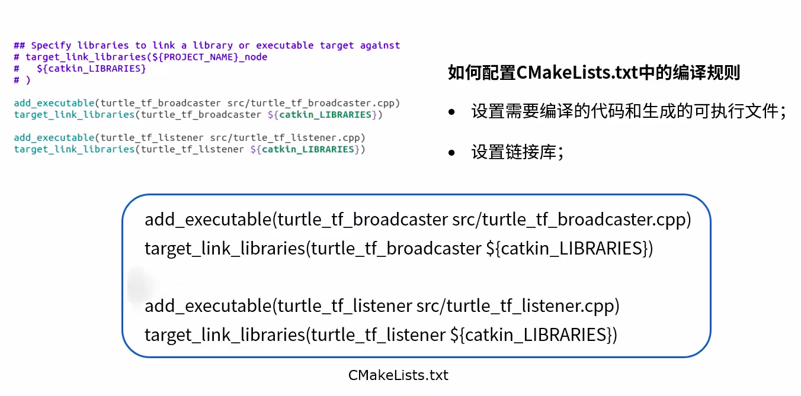
xxxxxxxxxxadd_executable(turtle_tf_broadcaster src/turtle_tf_broadcaster.cpp)target_link_libraries(turtle_tf_broadcaster ${catkin_LIBRARIES})add_executable(turtle_tf_listener src/turtle_tf_listener.cpp)target_link_libraries(turtle_tf_listener ${catkin_LIBRARIES})
xxxxxxxxxxcd ~/catkin_wscatkin_makesource devel/setup.bashroscorerosrun turtlesim turtlesim_noderosrun learning_tf turtle_tf_broadcaster __name:=turtle1_tf_broadcaster /turtle1rosrun learning_tf turtle_tf_broadcaster __name:=turtle2_tf_broadcaster /turtle2rosrun learning_tf turtle_tf_listenerrosrun turtlesim turtle_teleop_key
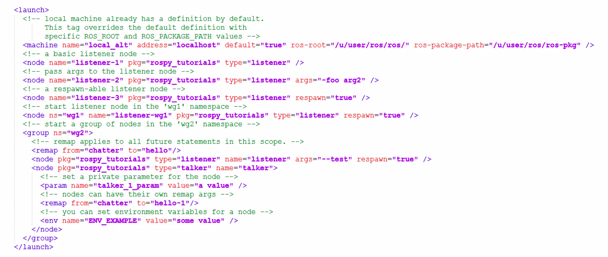
通过XML文件实现多节点的配置和启动（可自动启动ROS Master）
xxxxxxxxxx<launch> <node pkg="turtlesim" name="sim1" type="turtlesim_node"/> <node pkg="turtlesim" name="sim2" type="turtlesim_node"/></launch>
<launch>
<node>
启动节点
<param> / <rosparam>
设置ROS系统运行中的参数，存储在参数服务器中
<param name="output_frame" value="odom"/>
加载参数文件中的多个参数：
<arg>
launch文件内部的局部变量，仅限于launch文件使用
<arg name="arg-name" default="arg-value" />
调用
<remap>
重映射
重映射ROS计算图资源的命名
<remap from="/turtlebot/cmd_vel" to="/cmd_vel" />
<include>
包含其他launch文件，类似C语言中的头文件包含
<include file="$(dirname)/other.launch" />
更多标签可见： http://wiki.ros.org.roslaunch/XML
xxxxxxxxxxcd ~/catkin_ws/srccatkin_create_pkg learning_launch
创建simple_launch文件
xxxxxxxxxx<launch> <node pkg="learning_topic" type="person_subscriber" name="talker" output="screen" /> <node pkg="learning_topic" type="person_publisher" name="listener" output="screen" /> </launch>
编译
xxxxxxxxxxcd ~/catkin_wscatkin_make
启动
xxxxxxxxxxroslaunch learning_launch simple.launch
创建turtlesim_parameter_config.launch文件
xxxxxxxxxx<launch> <param name="/turtle_number" value="2"/> <node pkg="turtlesim" type="turtlesim_node" name="turtlesim_node"> <param name="turtle_name1" value="Tom"/> <param name="turtle_name2" value="Jerry"/> <rosparam file="$(find learning_launch)/config/param.yaml" command="load"/> </node> <node pkg="turtlesim" type="turtle_teleop_key" name="turtle_teleop_key" output="screen"/></launch>
config/param.yaml
xxxxxxxxxxA123B"hello"group C456 D"hello"
创建 start_tf_demo_c++.launch 文件
xxxxxxxxxx <launch> <!-- Turtlesim Node--> <node pkg="turtlesim" type="turtlesim_node" name="sim"/> <node pkg="turtlesim" type="turtle_teleop_key" name="teleop" output="screen"/> <node pkg="learning_tf" type="turtle_tf_broadcaster" args="/turtle1" name="turtle1_tf_broadcaster" /> <node pkg="learning_tf" type="turtle_tf_broadcaster" args="/turtle2" name="turtle2_tf_broadcaster" /> <node pkg="learning_tf" type="turtle_tf_listener" name="listener" /> </launch>
创建turtlesim_remap.launch文件
xxxxxxxxxx<launch> <include file="$(find learning_launch)/launch/simple.launch" /> <node pkg="turtlesim" type="turtlesim_node" name="turtlesim_node"> <remap from="/turtle1/cmd_vel" to="/cmd_vel"/> </node></launch>
启动
xxxxxxxxxxroslaunch learning_launch turtlesim_remap.launch
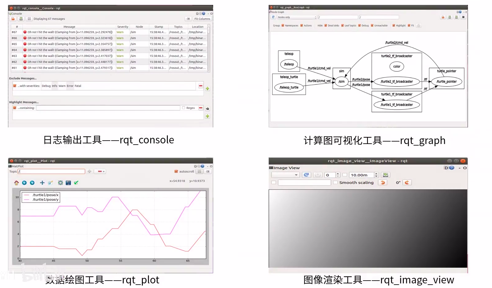
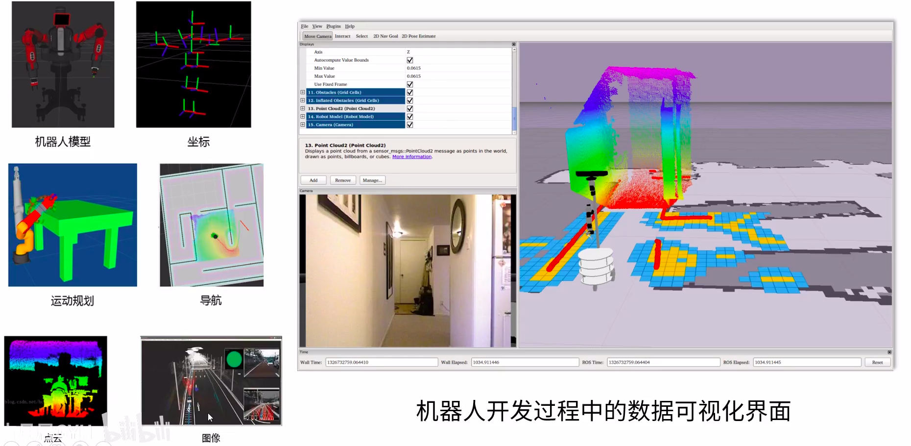
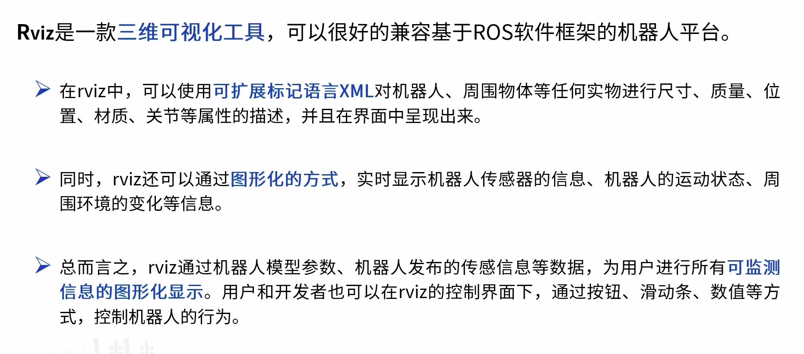
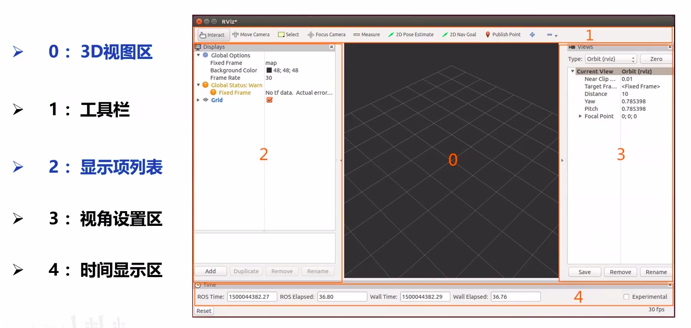
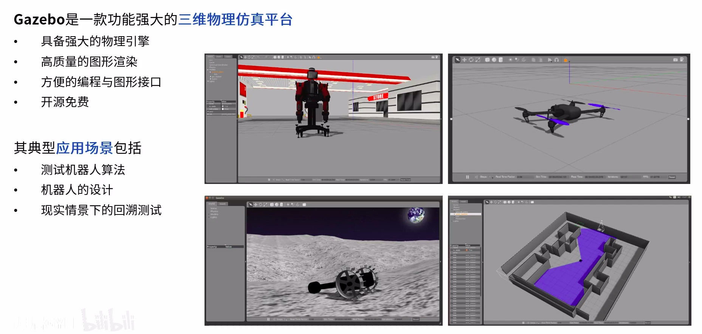
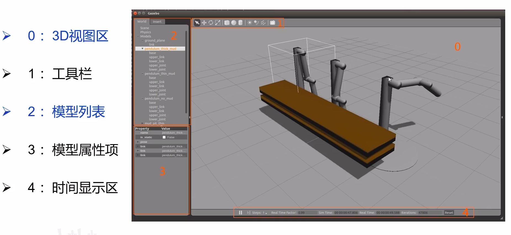